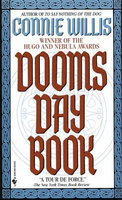

"Doomsday Book"
- Read on 2024-01-10
- Rating: ️️️️️
- Format: 🎧 (26 hours 20 minutes)
An enjoyable book, where time travel is somewhat commonplace, and scientific. The Space-Time Contiuum is respected, and nobody is throwing things completely out of whack. Visits to other times/places are for educational or research purposes, and things go smoothly. Until they don't.
While I enjoyed this book, I also felt like it could have been 25% shorter. But maybe all of the added details will play out to the benefit of the series as a whole.
- Prior: Solito
- Next: The Path to Power